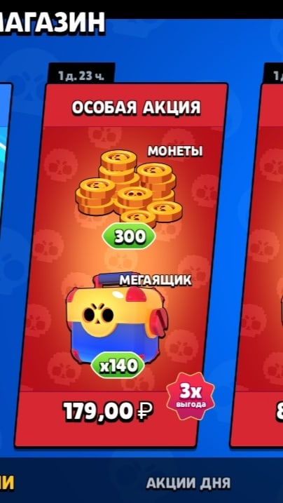
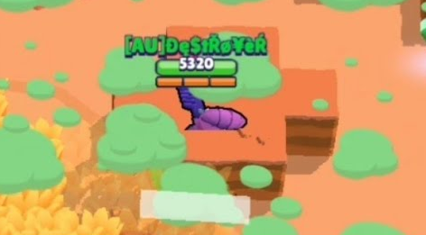

и первым багом можно сказать акцию за 179 рублей и за эти деньги вы могли получить 140 мегаящиков и 300укромных монет для гея(эдгара) в Brawl Pass не наберется и 30 мегаящиков а тут их 140 при том что 30 гемов стоят 290 рублей а сам мегаящик стоит целых 80 рублей
Другой же баг с помощью которого игроки переворачивали исходный результат матча, этот баг взорвал тикток в свое появления. Это возможность проходить за Мортиса через стенки, а позже и через черепа с костями. Самое удивительное заключается в том, что баг просуществовал более недели. Также с помощью этого бага можно было легко всех побеждать в режиме "Большая игра", играя на месте босса.
